Input Format
MACHine and beam parameters....(up to 80 char)
e1 e2 de nlum dnu nint nbunch
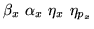
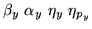 mprint [list]
Note: if e1 is zero then nlum is assumed 0 and the input twiss
parameters values are those obtained in a previous matrix analysis.
If e1 is non zero but 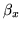 is zero, the first line of parameters must
be given and the initial twiss parameters values will be those of the
preceding matrix analysis.
Parameter definitions
e1 start momentum for beam data and luminosity
computations.
e2 end momentum
de momentum step
nlum
0 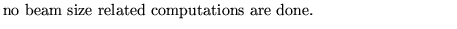
1 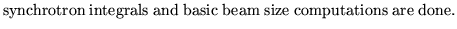
2 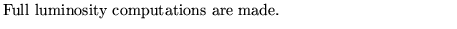
dnu dnu value used for optimum luminosity computation.
nint number of interaction regions
nbunch number of bunches
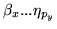
function values at starting point of lattice.
mprint
-2 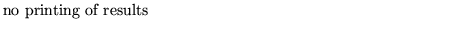
-1 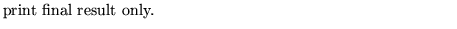
0 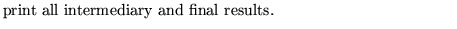
n 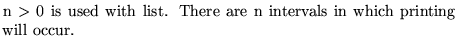
list 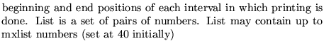
Examples
The first example, from demo2, shows a general use of this operation.
The second example from demo9 shows how to use this operation when one needs only the list of the twiss parameters around the lattice. Notice that in this case the operation must be preceded by a matrix analysis and that both motions (horizontal and vertical) must be stable.
MACHINE AND BEAM PARAMETERS. NO LUMINOSITY COMPUTATIONS. 1 1.2 .2 0 0.025 1 1 21.357376 0 0 0 3.940971 0 0 0 1 1 53, MACH 0,